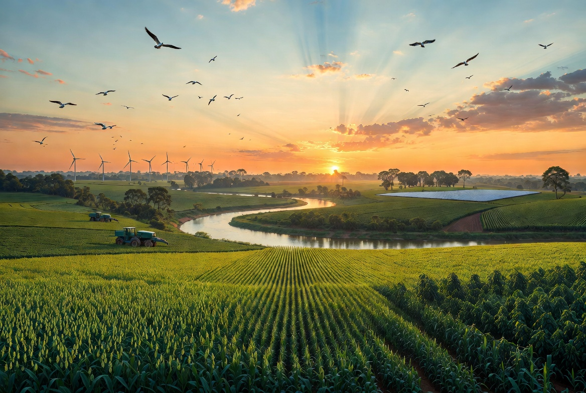
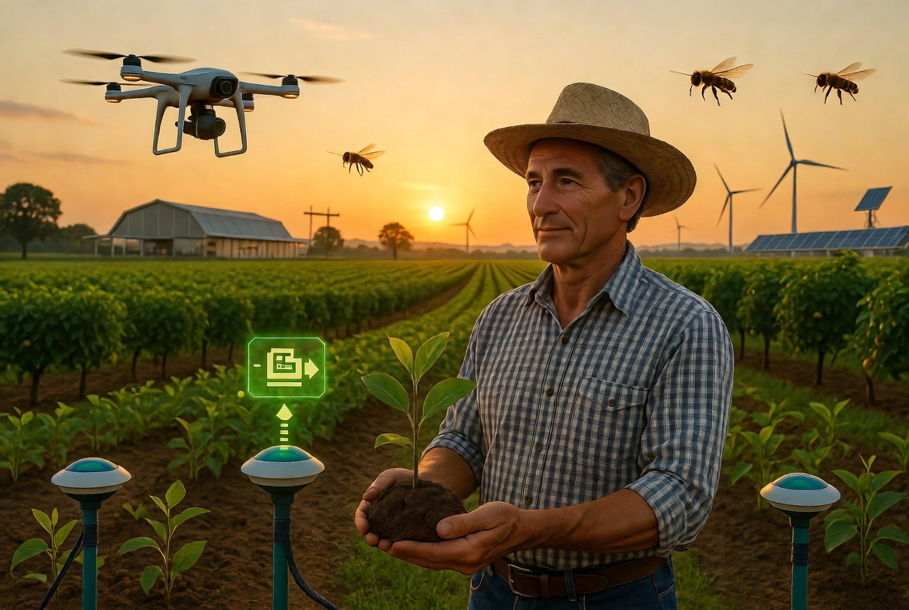

Produzir alimentos com responsabilidade, preservando os recursos naturais para as próximas gerações.
Conheça o Projeto
O agronegócio brasileiro desempenha um papel essencial na produção de alimentos, geração de empregos e crescimento econômico.
Entretanto, esse crescimento precisa estar aliado à preservação ambiental, utilizando tecnologias sustentáveis, reduzindo impactos ambientais e promovendo o uso consciente dos recursos naturais.
Participação aproximada do agronegócio no PIB brasileiro.
Empregos relacionados ao agronegócio.
O Brasil é referência mundial na produção de soja, café, milho e carne bovina.
A agricultura moderna utiliza tecnologias que aumentam a produtividade, reduzem desperdícios e preservam o meio ambiente.
Sensores e GPS aumentam a eficiência do plantio.
Reduz o consumo de água em até 30%.
Monitoram lavouras e detectam problemas rapidamente.
Energia solar e eólica reduzem custos e impactos ambientais.

Produzir de maneira sustentável significa utilizar tecnologias que aumentam a produtividade sem causar danos ao meio ambiente.
Técnicas agrícolas evitam erosão e preservam a fertilidade do solo.
Sistemas inteligentes economizam água e evitam desperdícios.
Recuperação de áreas degradadas e proteção das matas nativas.
Painéis solares e energia eólica reduzem custos e emissões.
Mecanização agrícola.
Modernização das máquinas.
Agricultura de Precisão.
Drones e sensores inteligentes.
Inteligência Artificial e agricultura autônoma.
Apesar do avanço tecnológico, diversos desafios ainda precisam ser enfrentados.
A retirada inadequada da vegetação compromete a biodiversidade.
A irrigação sem controle pode provocar desperdícios.
Máquinas e queimadas aumentam os gases do efeito estufa.
A redução dos habitats naturais ameaça diversas espécies.
A tecnologia e a inovação são fundamentais para garantir uma agricultura mais eficiente e sustentável.
Recupera áreas degradadas e melhora a fertilidade do solo.
Sistemas inteligentes ajudam na tomada de decisões.
Permite acompanhar plantações em tempo real.
Crescimento econômico aliado à preservação ambiental.
Qual tecnologia ajuda a reduzir o desperdício de água no campo?
Informe quantas árvores existem em sua propriedade.
Tem alguma dúvida ou sugestão? Entre em contato conosco.
"Como o agronegócio pode crescer economicamente sem comprometer os recursos naturais das futuras gerações?"